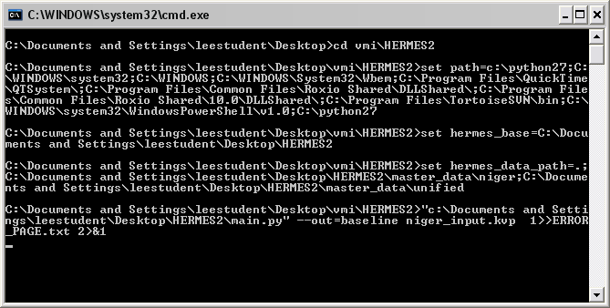
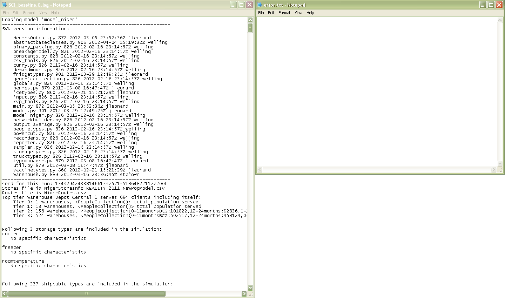

Running HERMES: Checking Your Input Files
So the data input files and your combined input file have been sorted out. You want to start running HERMES. How, exactly, do you then run HERMES? How do you know what to look for?
Perform the following check before you run HERMES for the first time.
- Check that the following data input files are included in the combined input file. (Note: the ones mentioned as in the Unified folder are not necessary to include in the input file, as they're always used in the runs.):
- Stores File - contains data related to storage capacities at individual clinics and information on ownership of storage devices, transportation vehicles and cold rooms.
- Routes File - contains data related to the routes taken between locations in the supply chain.
- Demand File - contains the "vaccine demand" needed for a single patient - that is, the vaccination schedule required for each person type specified in UnifiedPeopleTypeInfo).
- Calendar File - this file specifies how much of a total location's defined population would visit the vaccination administration area, per month. (not used in initial example; syntax is "calendarfile = Niger_Calendar_Baseline")
- Storage Gap File - contains data on the type of cold devices / fridges that the system will use to add volume and/or storage to the model in a gap analysis scenario.
- Price Table - contains data related to the individual cost categories (i.e., storage, labor, transport and building) accumulated in the cost of the run.
- Open Vial Waste - a file that is, for now, specific to Niger. Allows the baseline open vial waste to act as a "baseline" from which open vial waste effects are noticed.
- Check the combined input file. It should contain the following fields:
- rundays - number of 'days' the scenario is going to actually run
- model - name of the model
- monitor - monitor the stock levels of locations with these ID codes (can be commented out)
- monvax - monitor a specific vaccine type, or all of them
- burnindays - number of 'days' for which the scenario is going to set up a stockpile
- storesfile - name of your Stores file (see above)
- routesfile - name of your Routes file (see above)
- demandfile - name of your Population / "Vaccine Demand" file
- saveall - specified name of the compressed file which will save all inventory graphs for all locations (can be commented out)
- outputfile - specified prefix of the output files
- factoryoverstockscale - denotes amount of buffer stock found in each shipment
- factoryshipmentsperyear - denotes the number of factory shipments sent to the top supply chain level per year
- initialovw - name of the initial open vial waste file (only needed for Niger model -- can be commented out)
- twentyeightdaymonths - denotes if a simulation month is 28 ("True") or 30 ("False").
- scaledemandbyexpected - denotes the expected demand for each vaccine, by proportion of the population (can be commented out).
- scaledemandbyactual - denotes the actual demand for each vaccine, by proportion of the population (can be commented out).
- pricetable - denotes the price/costing table used in the simulation
- seed - specified seed number (can be commented out)
- Check the batch file. It should have the following syntactical format - where anything with caps indicate something to be changed. (The "hermes_base" syntax has been removed from this copy of the batch file.) There's been a extra little piece added to the batch file, as well.
cd [FOLDER THAT YOU WANT OUTPUT DOCUMENTS SAVED INTO]
set path=[PATH TO PYTHON];%path%
set hermes_data_path=.;[FOLDERS YOU WANT TO READ FROM, IN ORDER]
[PATH TO YOUR MAIN.PY FILE] --out=[OUTPUT NAME] [NAME OF YOUR INPUT FILE] >> [ERROR_PAGE].txt 2>&1
Notes about the ">" syntax::
- If you use one chevron alone (e.g. "> error.txt 2>&1"), then it will only save the error messages from your most recent simulation run.
- If you use two chevrons together, (e.g. ">> error.txt 2>&1"), then you will be able to save all your error files from your batch file.
New error messages will be appended (added) to the bottom of the old error message file.
If the above input files have been checked and the batch file has been clicked on, what should HERMES look like?
If everything has been checked above, the window running the HERMES simulation should look something (but most probably, not exactly) like this:

If that looked intimidating, don't worry! Concentrate on that last part of the batch file -- it looks an awful lot like what was written in the example batch file before, right?
As long as that black window (which is called our command line window) is present on the screen, the HERMES scenario is running. If it disappears, that means that the scenario is either done running, or something went awry with the model...
What if HERMES has randomly stopped, or that black window has disappeared?
Good question. To troubleshoot the model, look at the log and the error files in the HERMES repository - which should have been automatically created at the very beginning of the scenario.
For a normal (non-erroneous) model simulation, the log and error files would look like the ones below. (Click on the image for a larger version.. The error file is the one that appears blank.)

In a simulation experiencing an error, the error file will contain the following lines:
- [OUTPUT NAME].0.log - this is a text file that many provide information about your error -- and, more likely, will also show the vaccines introduced, the populations that are being supplied and the storage and transportation devices used. Depending on the scenario you're running, it can also display if fridges are moving or if the process being tested is working. This file will be explained in a bit.
- error.txt - yes, that little "error file" previously written into the batch file is going to specifically show the error. It'll first show a seed number (if one was unspecified) and the name mismatches between the Stores and the Routes file. The following lines, with this type of formatting, can be seen:
Traceback (most recent call last):
[LOTS OF INPUT LINES HERE]
RuntimeError:
seed for this run:
------------------------------------------------------------
Exception:
------------------------------------------------------------
This is how the above error should be read to troubleshoot a run:
- Look at the Traceback (most recent call last): to see where the error originated. Usually, the error that appears at the bottom of that list is the location in which the error originated. Fix that portion of the code so that the rest of the errors will not occur.
- RuntimeError should tell the exact nature of your simulation's error.
- Skipping over Seed for this run:, look at Exception:. This line, like Runtime Error, should tell the exact nature of your error. Usually, it's the same phrase as what's written in RuntimeError, but not always.
I checked the error files mentioned above. None of these lines are showing up.
Good. It appears that HERMES is running properly.
Wait for a while - depending on the model to be run, it can take anywhere from a few seconds to a couple of minutes - and then check the folder containing the batch file. It's time to read the outputs.